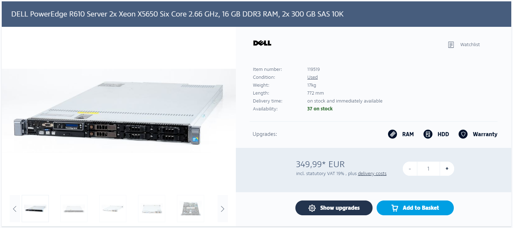
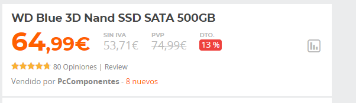

Servidor Cloud Dedicado
El servidor cloud dedicado nos supondría 50€ al mes, con nuestro dominio incluido, esta opcion es la misma que tener un servidor real pero en la nube con los sistemas de seguridad del hosting

El servidor cloud dedicado nos supondría 50€ al mes, con nuestro dominio incluido, esta opcion es la misma que tener un servidor real pero en la nube con los sistemas de seguridad del hosting
El servidor cloud nos supondría 25€ al mes, con nuestro dominio incluido, es la mejor opcion para empezar, pero insuficiente si queremos ampliar

Con un servidor porpio los gastos se nos elevan por culpa de tener que comprar el hardware, comprar un dominio y contratar IP fija o utilizar DynDns.
En este caso compraremos un servidor de segunda mano, y lo ampliaremos con dos SSD para hacer un RAID 1
El coste de la IP Fija es de 25€ en Movistar
Esta es la mejor opcion para los administradores mas avanzados, y ademas el servidor se amortiza en unos meses en comparacion con el hosting
 